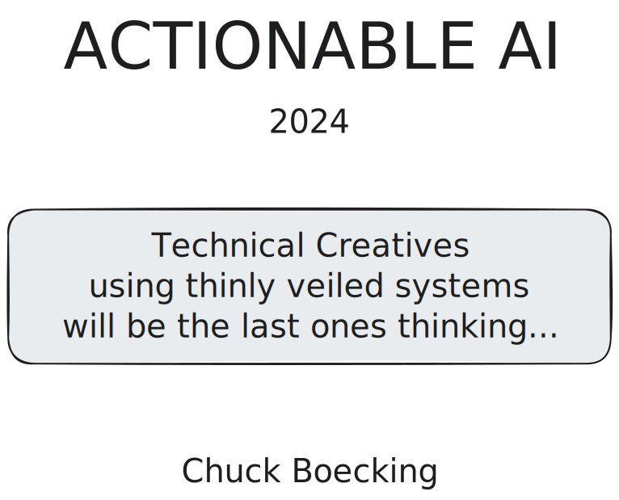
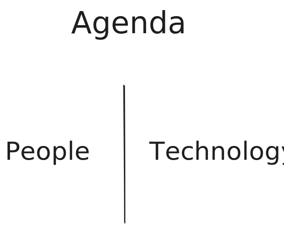
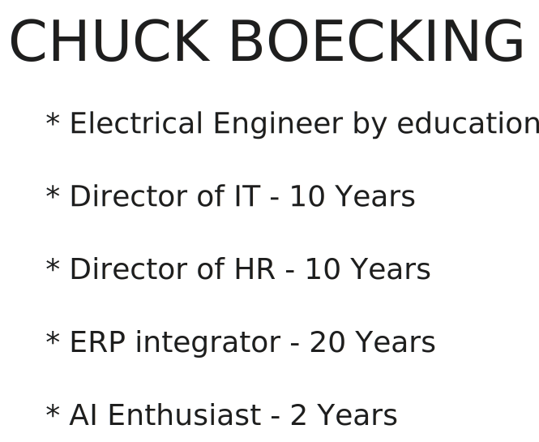
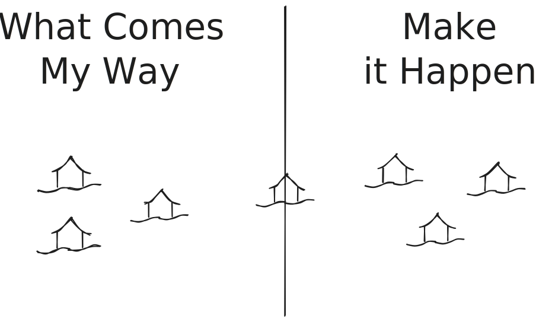
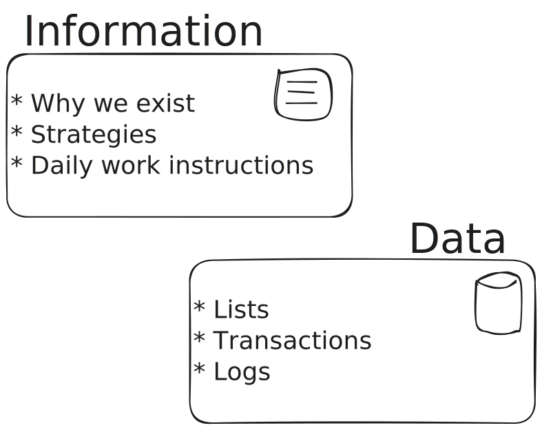
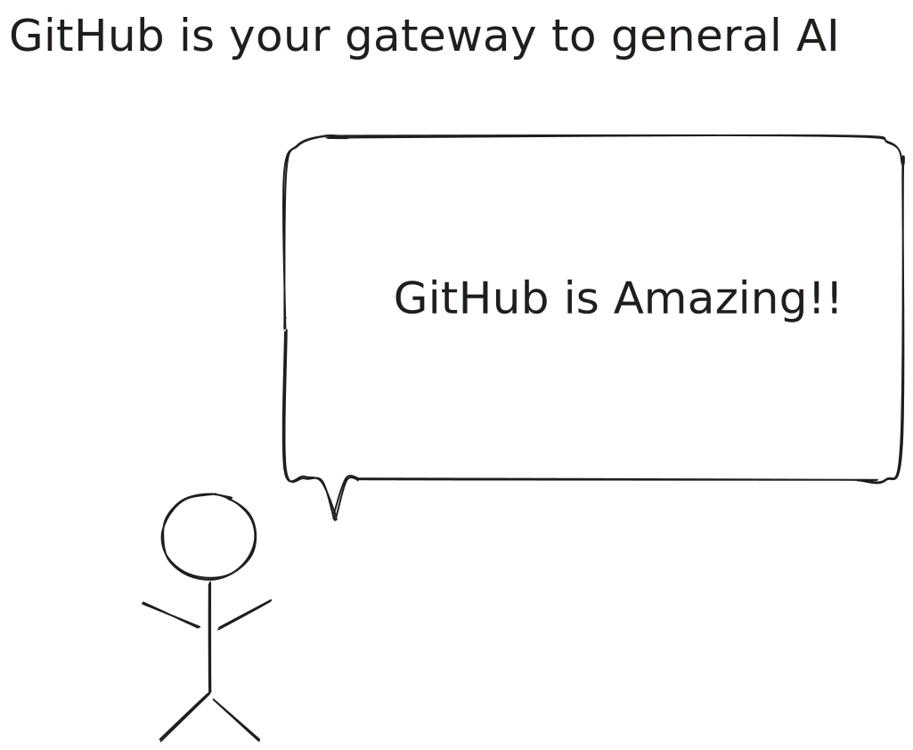
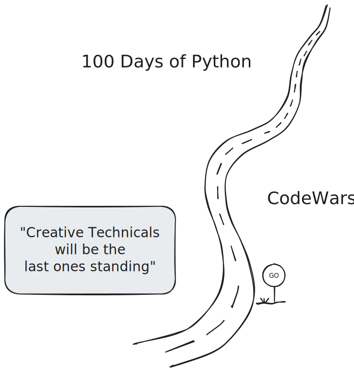
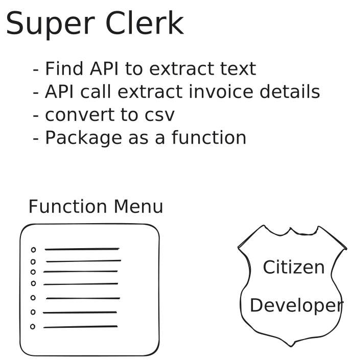
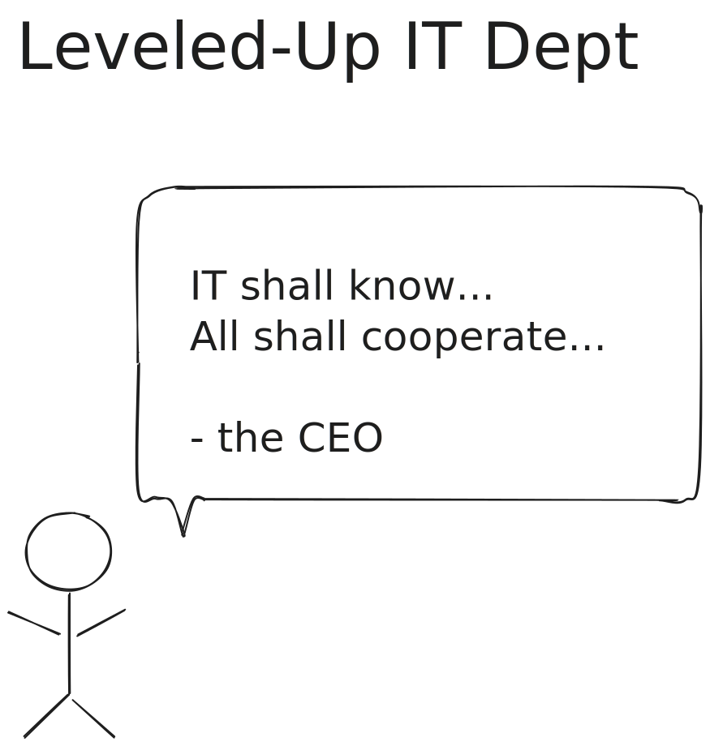
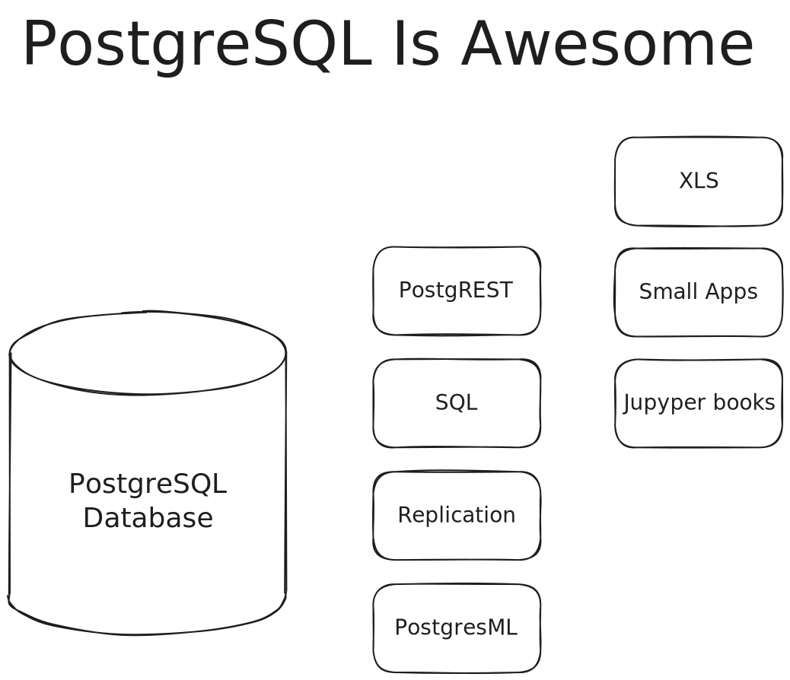

<!DOCTYPE html>
<html lang="en">
  <head>
    <meta charset="utf-8" />
    <meta name="viewport" content="width=device-width, initial-scale=1.0, maximum-scale=1.0, user-scalable=no" />

    <title></title>
    <link rel="stylesheet" href="dist/reveal.css" />
    <link rel="stylesheet" href="dist/theme/black.css" id="theme" />
    <link rel="stylesheet" href="plugin/highlight/zenburn.css" />
	<link rel="stylesheet" href="css/layout.css" />
	<link rel="stylesheet" href="plugin/customcontrols/style.css">


    <script defer src="dist/fontawesome/all.min.js"></script>

	<script type="text/javascript">
		var forgetPop = true;
		function onPopState(event) {
			if(forgetPop){
				forgetPop = false;
			} else {
				parent.postMessage(event.target.location.href, "app://obsidian.md");
			}
        }
		window.onpopstate = onPopState;
		window.onmessage = event => {
			if(event.data == "reload"){
				window.document.location.reload();
			}
			forgetPop = true;
		}

		function fitElements(){
			const itemsToFit = document.getElementsByClassName('fitText');
			for (const item in itemsToFit) {
				if (Object.hasOwnProperty.call(itemsToFit, item)) {
					var element = itemsToFit[item];
					fitElement(element,1, 1000);
					element.classList.remove('fitText');
				}
			}
		}

		function fitElement(element, start, end){

			let size = (end + start) / 2;
			element.style.fontSize = `${size}px`;

			if(Math.abs(start - end) < 1){
				while(element.scrollHeight > element.offsetHeight){
					size--;
					element.style.fontSize = `${size}px`;
				}
				return;
			}

			if(element.scrollHeight > element.offsetHeight){
				fitElement(element, start, size);
			} else {
				fitElement(element, size, end);
			}		
		}


		document.onreadystatechange = () => {
			fitElements();
			if (document.readyState === 'complete') {
				if (window.location.href.indexOf("?export") != -1){
					parent.postMessage(event.target.location.href, "app://obsidian.md");
				}
				if (window.location.href.indexOf("print-pdf") != -1){
					let stateCheck = setInterval(() => {
						clearInterval(stateCheck);
						window.print();
					}, 250);
				}
			}
	};


        </script>
  </head>
  <body>
    <div class="reveal">
      <div class="slides"><section  data-markdown><script type="text/template"><!-- .slide: class="drop" -->
<div class="" style="position: absolute; left: 0px; top: 0px; height: 700px; width: 960px; min-height: 700px; display: flex; flex-direction: column; align-items: center; justify-content: center" absolute="true">



Notes:
- Purpose
- Picture of Success
- Process Engineer
- Actionable results for yourself

The purpose of today is to help you reason about AI in your organization. More specifically, the goal is to offer tangible concepts that you can action this year.

Before we begin, I want to paint a picture of success...
ChatGPT is getting good at taking symptoms and offering medical insights. You don't need to look very far to find successes where someone plugs in symptoms and ChatGPT offers insights and diagnoses missed by their doctors.

How do you get that same ability about a manufacturing problem? How do you enable a process engineer to ask an ai model about your information and your data and have it reason about the potential issues and solutions?

You are looking for insights that lead to actionable results. You want to augment human thought and potentially even actions.

If I do a good job today, you will have an understanding and a plan to create this ability for yourself.
</div></script></section><section  data-markdown><script type="text/template"><!-- .slide: class="drop" -->
<div class="" style="position: absolute; left: 0px; top: 0px; height: 700px; width: 960px; min-height: 700px; display: flex; flex-direction: column; align-items: center; justify-content: center" absolute="true">




Notes:
- human-based
- Split
- Human Augmentation
- Inoculation if time

Even though AI is very much technology based, our ability to make the most of it is very much human based.

We will spend our time split between Technology and People strategies.

In fact, "Human Augmentation" is the dominant theme in today's discussion.

If we have time, I will give you a quick inoculation into what I believe are the most important AI concepts.
</div></script></section><section  data-markdown><script type="text/template"><!-- .slide: class="drop" -->
<div class="" style="position: absolute; left: 0px; top: 0px; height: 700px; width: 960px; min-height: 700px; display: flex; flex-direction: column; align-items: center; justify-content: center" absolute="true">




Notes:
- me = create, deploy, teach business systems
- employee happy
- executive happy
- job to remove barriers - AI remove some and raise others
- AI recommendations for both HR and IT

I have spent most of my career creating, deploying and teaching business systems.

- I am an engineer by education. 
- I have 10 years as an actual IT person.
- ... 10 years in HR with a focus on human performance
- over 20 years deploying ERP/MRP systems

What I have learned is that...

If you want to make an employee happy... give them the data they need when and where they need it, make their job easy and help prevent mistakes.

If you want to make an executive happy... give them a system that is operationally efficient and provides a way to create strategic advantage.

Essentially, my job is to provide access and move barriers. AI amplifies these needs.

I am going to give you AI recommendations that you can take back to your IT and HR departments. Be aware, these recommendations may go against conventional wisdom. My goal is to prove to you why I believe they are important.
</div></script></section><section  data-markdown><script type="text/template"><!-- .slide: class="drop" -->
<div class="" style="position: absolute; left: 0px; top: 0px; height: 700px; width: 960px; min-height: 700px; display: flex; flex-direction: column; align-items: center; justify-content: center" absolute="true">



Notes:
- Assumptions about you
- 2 camps (or 3rd)
- goal to play in "Make it Happen" not overwhelming 
- erp (not tictok)

Transition: the previous slide was about me. Now, let's talk about you.

I am making the assumption that most of you are in one of two camps:
1. what comes my way
2. make it happen

- Camp #1 (what comes my way), your AI strategy is to rely on your tools providers to create something useful. You are already paying them a lot of money. They should be able to figure it out. You hope they come up with something good.
- Camp #2 (Make it happen), your AI strategy is to proactively find the right people, get access to your data and create tools to drive insights and automation.
- Or, you are in the middle.  You have someone appointed to lead AI. You are building relationships with your providers, and you are helping to drive the strategy toward something that works for you.

Today's conversation is more geared towards the 'proactive and make it happen' camp. More importantly, I want to paint a picture of how you can play in camp #2 without it overwhelming you.

Ref:
value proposition and competitive advantage
</div></script></section><section  data-markdown><script type="text/template"><!-- .slide: class="drop" -->
<div class="" style="position: absolute; left: 0px; top: 0px; height: 700px; width: 960px; min-height: 700px; display: flex; flex-direction: column; align-items: center; justify-content: center" absolute="true">




Notes:
- before get to first point...
- information
- data
- tie picture of success - massive teams
- Q? same benefit without massive

Before we get into my first point, I want to draw a distinction between information and data.

**Information** describes why and how you exist. It articulates your value proposition and who you provide it to. It is your daily work instructions. It describes your current strategies to extend your value proposition and to whom.
- Why we exist => Value proposition
- Strategies => Drive more value to more people
- Objectives => Daily work instructions 

**Data** are all the footprints in the history of your company. It is everything you keep in a database. It is your customer and vendor lists. Data is your item master. Data represent all your work orders, shipments, invoices, CARs/PARs. 

I want to tie this slide back to the picture of success => the story about ChatGPT uncovering value medical insights. There are teams of people who extract "information" from thousands of papers and aggregate massive databases. These teams put in appreciable work.

The question is: how do you get the same benefit without all the work?
</div></script></section><section  data-markdown><script type="text/template"><!-- .slide: class="drop" -->
<div class="" style="position: absolute; left: 0px; top: 0px; height: 700px; width: 960px; min-height: 700px; display: flex; flex-direction: column; align-items: center; justify-content: center" absolute="true">



Notes:
- sell you on github
- it has...
- battled tested...
- Real proof - sofware development AI dominant (msft 50%)
- Why - text and ecosystems
- Picture of success - github tell your story

I am going to sell you on github - not for development, but for managing all your companies information! It can handle everything from marketing messages to manufacturing work instructions.

 It has...
- Users and permissions
- Publishes content and instructions
- Track changes
- Tasks and kanban
- Issues (CARs and PARs)
- Discussions
- Automation

Battle Tested - Good enough for developers...
- Developers are some of the smartest people in the world
- Working with some of the greatest distances
- On projects with some of the tightest tolerances
- When language is precise
- Where delivery is critical
- and Load can be intense
- AND it is cheap

But the real proof is this...
Despite the fact that programming is one of the more complex and difficult tasks, it is the industry with the most AI augmentation.

Microsoft believes that half the code commited on github today is autogenerated by an AI co-pilot.

Why? Because AI (specifically LLM or Generative AI) loves text. And now, we have this entire ecosystem build around ingesting and understanding these github repositories.

As opposed to word or google docs where your words and your meaning are trapped by the tooling. Text is free.

If you want to give your organization to best opportunity to accomplish picture of success I referenced at the beginning, let github support your story.

Ref:

QR

https://www.youtube.com/watch?v=WgV6M1LyfNY
https://www.wired.com/story/fast-forward-ai-rewiring-coders-brains-github-copilot/

Disclaimer - not everyone can make the move... But the barrier to entry is so low, and the patterns are so well demonstrated, almost anyone can try.
</div></script></section><section  data-markdown><script type="text/template"><!-- .slide: class="drop" -->
<div class="" style="position: absolute; left: 0px; top: 0px; height: 700px; width: 960px; min-height: 700px; display: flex; flex-direction: column; align-items: center; justify-content: center" absolute="true">




Notes:
- learn code
- no drive? be navigator
- hiring - look for codewar
- everyone will have this superpower

If you have not learned to code yet, you need to start. Replet's 100 days of Python is a great first look.

I want to say it again. If you want to remain relevant, you need to learn coding.

It is important to note that note everyone will code at a keyboard. But, you need to be able to reason about what you can accomplish and how. You need to understand the concepts and the logistics of coding. 

There is value is both the driver at the keyboard and the navigating observer. 

Most importantly, you need to understand that everyone will have this superpower.

Ref:
- [Pair programming](https://en.wikipedia.org/wiki/Pair_programming)
</div></script></section><section  data-markdown><script type="text/template"><!-- .slide: class="drop" -->
<div class="" style="position: absolute; left: 0px; top: 0px; height: 700px; width: 960px; min-height: 700px; display: flex; flex-direction: column; align-items: center; justify-content: center" absolute="true">




Notes:
- introduce to super clerk
- invoice manual stupid
- text, pdf, documentAI,csv
- not science fiction
- it ticket - remove barrier (csv)
- repeat 10 times
- orchestration
- erp academy 5 years vs now

I want to introduce you to a super clerk. They are an AP clerk., They completed their 100 days of python. They find their zen state playing codewars. 

They realize that hand keying AP invoices into an ERP is ridiculous. They open their development environment. It asks "what would you like to build?". They ask for a python program that will take pdfs in a directory, pass then to google's Document AI service for extraction, and create a CSV so that I can import it into my iDempiere or NetSuite ERP.

This is not science fiction! There is a development environment named Cursor. This is exactly how it behaves. 

They might need to create an IT ticket to perform the upload. But it would only be for IT to grant access to the import utility. 

Take the same github access we discussed before, and now employees are checking in scripts. Before long, you have menu scripts to automate tasks.

It does not take long before someone realized that you can wire these scripts together to orchestrate tasks.

Repeat this concept 10 or so times in a year. What does the AP department look like in a year?

If you do not believe me, let me tell you about the ERP Academy...

Ref:
- citizen development - Kevin Thex
- Technologist
- Bisnologiest
</div></script></section><section  data-markdown><script type="text/template"><!-- .slide: class="drop" -->
<div class="" style="position: absolute; left: 0px; top: 0px; height: 700px; width: 960px; min-height: 700px; display: flex; flex-direction: column; align-items: center; justify-content: center" absolute="true">



Notes:
- Long-standing reputation
- Last example indicator of way more
- Solution
	- IT all code
	- cooperate
- citizen develop pride
- aside: ui (WTF) is about to change
- IT needs framework

IT has had a long-standing reputation of being a barrier to progress (slowing things down). The story that i just described is going to make this situation a whole lot worse.

They have a herculean task to support these citizen developers and  still maintain standards.

There are two strategies that I believe are critical to your success:
- IT needs to access to every line of code. This is especially true if your big enough to have an enterprise architect.
- The CEO needs drive a message of cooperation and ensure the systems are in place to support cooperation.

This is important because citizen developers will have a sense of pride (even protection for what they created) - they cannot.

"Thou Shall Cooperate" the CEO

IT needs the ability to change, migration and adapt -- and they need everyone's cooperation.

IT needs a framework to support the demands. 

Tangent about UI: see of windows, tabs and fields. This UI is going away....
</div></script></section><section  data-markdown><script type="text/template"><!-- .slide: class="drop" -->
<div class="" style="position: absolute; left: 0px; top: 0px; height: 700px; width: 960px; min-height: 700px; display: flex; flex-direction: column; align-items: center; justify-content: center" absolute="true">



Notes:
- page is geeky and important (IT remove barriers - users need better access)
- DB in corner - not good - cause pain
- postgresql core features (it has... quick!!)
- postgresql - what you did not know
	- postgREST - openapi compliant - XLS
	- webhooks
	- postgresML
- user and permissions at the db
- PSQL + PostgREST + HTMX => Time Clock
- Supabase and PostgREST- learn the most

It has:
- Users and security
- API endpoints
- Events
- Secrets
- Document storage

Battle tested:
- Scales
- Documented
- Demonstrated

This is where I get geeky. Please bear with me.

Over time, we sometimes overshoot complexity. Now is one of those times. We have buried the database in the corner, and we have created all these layers that contain security, and business logic, etc... 

The modern day react frameworks are crazy bad. They are super complex. They require high-dollar employees to build and maintain. And they slow you down.

I am going to sell you on postgresql
- battle tested for 30 year
- rich ecosystem of extensions
- Modern hardware can have 256 cores and  1TB of ram. There are cases of companies hitting 1B in revenue on a single instance.
- Features
	- roles
	- permissions and policies

I can write a policy in PostgreSQL that will isolate two tenants in the same database in just a couple of lines of code. This same concept is very difficult in an application.

The leveled up employee might not even use the application.  They will ask an AI to solve a problem. The AI might recommend SQL, or a REST API or Python, or ...

You can even run AI in your database using PostgresML tangent...

Supabase tangent...
</div></script></section><section  data-markdown><script type="text/template"><!-- .slide: class="drop" -->
<div class="" style="position: absolute; left: 0px; top: 0px; height: 700px; width: 960px; min-height: 700px; display: flex; flex-direction: column; align-items: center; justify-content: center" absolute="true">


Notes:

AI and ML - similar concepts

LLM => Large Language Model (generative AI)

Three classes of LLM
- foundation (chatGPT, Gemini)
- open source (llama2, Mistrel)
- purpose built

Goal is to be able to run the smallest model possible to get the desired results.

Three types of LLM
- Base
- Instruct
- Chat

Strategies
- prompt engineering
- RAG - retrieval augmented generation
- Fine tuning

What is a modal (multimodal llm) (text, vision, sound, robotics, etc...)

Tools
- ollama - easiest way to run an LLM locally
- langchain - programmatic tools for getting results from LLM
- vscode - best editor - comes with copilot (ai programmer)
- Jupyter notebook - way to reason with code, information and data
- Colab - google's hosted jupyter notebook
- PostgresML - way to run LLM directly in PostgreSQL
</div></script></section><section  data-markdown><script type="text/template"><!-- .slide: class="drop" -->
<div class="" style="position: absolute; left: 0px; top: 0px; height: 700px; width: 960px; min-height: 700px; display: flex; flex-direction: column; align-items: center; justify-content: center" absolute="true">


</div></script></section><section  data-markdown><script type="text/template"><!-- .slide: class="drop" -->
<div class="" style="position: absolute; left: 0px; top: 0px; height: 700px; width: 960px; min-height: 700px; display: flex; flex-direction: column; align-items: center; justify-content: center" absolute="true">


</div></script></section><section  data-markdown><script type="text/template"><!-- .slide: class="drop" -->
<div class="" style="position: absolute; left: 0px; top: 0px; height: 700px; width: 960px; min-height: 700px; display: flex; flex-direction: column; align-items: center; justify-content: center" absolute="true">

# More
- Perplexity story
</div></script></section></div>
    </div>

    <script src="dist/reveal.js"></script>

    <script src="plugin/markdown/markdown.js"></script>
    <script src="plugin/highlight/highlight.js"></script>
    <script src="plugin/zoom/zoom.js"></script>
    <script src="plugin/notes/notes.js"></script>
    <script src="plugin/math/math.js"></script>
	<script src="plugin/mermaid/mermaid.js"></script>
	<script src="plugin/chart/chart.min.js"></script>
	<script src="plugin/chart/plugin.js"></script>
	<script src="plugin/customcontrols/plugin.js"></script>

    <script>
      function extend() {
        var target = {};
        for (var i = 0; i < arguments.length; i++) {
          var source = arguments[i];
          for (var key in source) {
            if (source.hasOwnProperty(key)) {
              target[key] = source[key];
            }
          }
        }
        return target;
      }

	  function isLight(color) {
		let hex = color.replace('#', '');

		// convert #fff => #ffffff
		if(hex.length == 3){
			hex = `${hex[0]}${hex[0]}${hex[1]}${hex[1]}${hex[2]}${hex[2]}`;
		}

		const c_r = parseInt(hex.substr(0, 2), 16);
		const c_g = parseInt(hex.substr(2, 2), 16);
		const c_b = parseInt(hex.substr(4, 2), 16);
		const brightness = ((c_r * 299) + (c_g * 587) + (c_b * 114)) / 1000;
		return brightness > 155;
	}

	var bgColor = getComputedStyle(document.documentElement).getPropertyValue('--r-background-color').trim();
	var isLight = isLight(bgColor);

	if(isLight){
		document.body.classList.add('has-light-background');
	} else {
		document.body.classList.add('has-dark-background');
	}

      // default options to init reveal.js
      var defaultOptions = {
        controls: true,
        progress: true,
        history: true,
        center: true,
        transition: 'default', // none/fade/slide/convex/concave/zoom
        plugins: [
          RevealMarkdown,
          RevealHighlight,
          RevealZoom,
          RevealNotes,
          RevealMath.MathJax3,
		  RevealMermaid,
		  RevealChart,
		  RevealCustomControls,
        ],


    	allottedTime: 120 * 1000,

		mathjax3: {
			mathjax: 'plugin/math/mathjax/tex-mml-chtml.js',
		},
		markdown: {
		  gfm: true,
		  mangle: true,
		  pedantic: false,
		  smartLists: false,
		  smartypants: false,
		},

		mermaid: {
			theme: isLight ? 'default' : 'dark',
		},

		customcontrols: {
			controls: [
			]
		},
      };

      // options from URL query string
      var queryOptions = Reveal().getQueryHash() || {};

      var options = extend(defaultOptions, {"width":960,"height":700,"margin":0.04,"controls":true,"progress":true,"slideNumber":false,"transition":"convex","transitionSpeed":"default"}, queryOptions);
    </script>

    <script>
      Reveal.initialize(options);
    </script>
  </body>

  <!-- created with Advanced Slides -->
</html>
